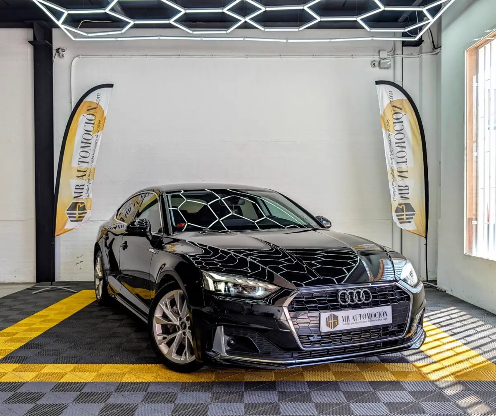

1 / 24Este Audi A5 Sportback es una unidad nacional matriculada en abril de 2023 que registra 79.850 km reales. Este vehículo se encuentra en un estado estético y mecánico impecable, configurado con la elegante línea Adavance. Bajo el capó equipa un motor de gasolina 40 TFSI de 2.0 litros y 204 CV , con una transmisión automática de doble embrague S-Tronic de 7 velocidades .
Gracias a su avanzado sistema de hibridación ligera (mild hybrid), este bloque ofrece un empuje contundente y una suavidad de marcha excepcional en autovía con unos consumos sumamente contenidos, beneficiándose de todas las ventajas de movilidad y estacionamiento que otorga la etiqueta ECO de la DGT .
Estética exterior Advanced y elegancia en negro profundo Línea de acabado Advanced: incorpora paragolpes específicos con molduras decorativas en un sofisticado acabado aluminio mate, faldones laterales estilizados y un difusor trasero exclusivo que realza su elegancia natural. Equipa llantas de aleación ligera de 18 pulgadas con radios en diseño aerodinámico dinámico, calzadas sobre neumáticos deportivos de primera marca Michelin Pilot Sport 4 en medida 245/40 ZR18 , garantizando un agarre soberbio.
Iluminación led de alta intensidad: faros delanteros full led con firma diurna característica y pilotos traseros led con intermitentes dinámicos. Parrilla delantera Singleframe con contorno cromado brillante, a juego con los marcos de las ventanillas y las limpias salidas de escape integradas.
Interior premiun Asientos deportivos en cuero completo: espectaculares asientos deportivos delanteros tapizados íntegramente en cuero premium de color negro con costuras de contraste claras, regulación lumbar eléctrica y calefacción integrada. Equipado con el cuadro de instrumentos 100% digital Audi virtual cockpit de alta resolución configurable, combinado con el volante de cuero multifunción de tres radios con levas para la gestión del cambio.
Conectividad MMI Touch: gran pantalla táctil central de alta definición con sistema de navegación e interfaz avanzada para smartphones ( Apple CarPlay y Android Auto inalámbricos). Climatización inteligente de tres zonas: climatizador automático digital con regulación independiente para el conductor, el acompañante y un display digital exclusivo con tomas de aire y conexiones de carga USB para los pasajeros de las plazas traseras.
Acabados refinados: molduras interiores decorativas en aluminio cepillado mate y paneles de las puertas coordinados, manteniendo la máxima sobriedad y distinción del habitáculo. Seguridad avanzada y asistentes a la conducción Equipado con el selector de modos de conducción Audi drive select (permite variar la respuesta del motor, el cambio y la dirección entre los perfiles Efficiency, Comfort, Auto, Dynamic e Individual), asistente activo de mantenimiento de carril, regulador y limitador de velocidad ( Tempomat ), sistema de frenada de emergencia en ciudad con detección de peatones, sensores de aparcamiento delanteros y traseros con indicación en pantalla, arranque por botón ( Keyless-Go ) y freno de mano eléctrico con función auto-hold .
Tu compra segura con MRAutomoción Disfruta de esta berlina coupé de reestreno con la total transparencia y tranquilidad que te ofrece nuestro equipo profesional: ✅ Mantenimiento y revisión completa: vehículo rigurosamente inspeccionado por nuestros técnicos antes de la entrega con su puesta a punto realizada. ✅ Kilometraje certificado . ✅ Garantía completa de 1 año (12 meses) incluida. ✅ Transferencia incluida: cambio de nombre y gestión documental listos en el precio final llave en mano, sin costes ocultos. ✅ Consúltanos nuestras ventajosas opciones de financiación flexible a tu medida con excelentes condiciones.
| Marca | Audi |
|---|---|
| Modelo | Audi A5 Sportback 40 TFSI 204 CV S-Tronic Advanced |
| Año | Abr 2023 |
| Kilómetros | 79.850 km |
| Combustible | Híbrido |
| Cambio | Semi-Automático |
| Potencia | 204 CV |
| Garantía | 1 Año |
Quizá también te encaje